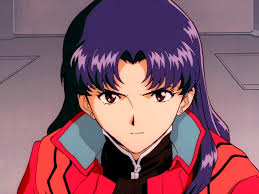

Misato
Misato Katsuragi (en japonais : 葛城 ミサト (?)) est l'un des personnages principaux de la série d'animation japonaise Neon Genesis Evangelion, de son film conclusif The End of Evangelion et de la tétralogie cinématographique Rebuild of Evangelion. Elle apparaît également dans les nombreuses adaptations en manga et jeu vidéo que la série a connu depuis sa création en 1995. Misato est lieutenant de l'organisation confidentielle NERV qui combat des monstres appelés « Anges » grâce à des Evangelions, des armes ayant l'apparence de robots géants. Elle prend sous son aile Shinji Ikari, le personnage principal de la franchise. Sous des allures sympathiques et sociales, elle cache en vérité un passé traumatisant. Présentation et personnalité Misato est la seule survivante de l'explosion du « Second impact », le cataclysme qui ravagea une partie de la planète en 2000 et qui est à l'origine de l'intrigue de la série. Le jour de l'explosion elle était avec son père, chef de l'expédition en Antarctique. Ce dernier parvient à la protéger en l'enfermant dans une capsule protectrice ressemblant à une Entry Plug, les cockpits des Evangelion. Misato, alors âgée de 14 ans, ressort traumatisée de cette expérience et ne prononcera aucun mot pendant des années. Bien que reconnaissante envers son père pour l'avoir sauvée, elle le déteste pour avoir consacré sa vie à son travail et l'avoir négligé, elle, et sa mère. La raison pour laquelle elle a rejoint la NERV est liée à sa volonté de venger son père. Elle porte toujours un pendentif que son père lui a donné avant de sceller la capsule protectrice. Après une adolescence difficile, sa personnalité change quand elle commence à étudier à l'université où elle devient plus sociable, exubérante et très bavarde. Elle y rencontre Ritsuko, future directrice scientifique de la NERV, et Ryoji, futur inspecteur spécial au service de Gendō Ikari, avec qui elle commence une relation amoureuse. Misato le quitte cependant car il lui rappelle trop son père. Lorsqu'ils se retrouveront des années plus tard, ils reprendront leur relation. Misato est une jeune femme très attirante, qui devient rapidement le sex-symbol des adolescents gravitant autour d'Ikari. Devenue lieutenant de la NERV, elle prend Shinji Ikari sous son aile lorsque Gendo le convoque pour qu'il devienne pilote. Elle l'accueille chez elle comme colocataire et se montre bienveillante avec lui. En l'accueillant, elle espère aussi se constituer un semblant de famille qu'elle n'a jamais eu. Elle accueille aussi par la suite Asuka Soryu Langley. Bien qu'elle ait une volonté sans borne pour combattre les Anges, elle enquêtera sur les secrets de la NERV pour comprendre ses véritables buts et les causes du Second impact. Si elle paraît très compétente et consciencieuse dans sa vie professionnelle, elle est très désorganisée dans sa vie privée. Elle apparaît même comme potentiellement alcoolique (elle ne boit quasiment que de la bière, notamment au petit-déjeuner). Son exubérance, son peu de pudeur (alors qu'elle vit avec un adolescent timide) et son tempérament excentrique sont autant de ressorts comiques de la série. Tactiques et stratégies Misato se révèle rapidement à la fois comme une tacticienne de génie, mais aussi comme une fine stratège et une excellente logisticienne. Face aux attaques répétées des anges qui utilisent à chaque fois de nouvelles armes, Misato crée et met au point des contres efficaces, même si la probabilité que ces derniers fonctionnent soient souvent de l'ordre infinitésimal. Lorsque l'un des anges dispose d'un AT-Field (champ de force protecteur) trop puissant pour être percé, elle met en place, en un temps record, une tactique consistant à lui tirer dessus avec toute l'énergie du Japon pour laquelle elle mobilise des centaines de véhicules spécialisés et des milliers de spécialistes (épisode 6 : Combat décisif à Tokyo-3). Lorsqu'un ange se sépare en deux entités parfaitement coordonnées, elle force les pilotes d'Eva à agir de concert sur une chorégraphie longuement répétée (épisode 9 : Juste un instant, les cœurs, à l'unisson) et lorsqu'un ange menace d'écraser le Géofront en attaquant depuis la troposphère tel un météore, elle utilise l'AT-field des Eva pour le stopper et coordonne la contre attaque (épisode 11 : Dans les ténèbres immobiles). Lorsque les circonstances le permettent, elle trouve systématiquement un parade, aidée en cela par son amie la scientifique Ritsuko et le super ordinateur Maggie. Il lui arrive cependant de faire des erreurs ou d'être prise par surprise (épisode 16 : la désespérance et après) et elle doit dans ce cas compter sur les capacités des pilotes à faire face à l'imprévu, ce qui n'est jamais sans conséquence sur leur psyché et la confiance qu'ils lui apportent.